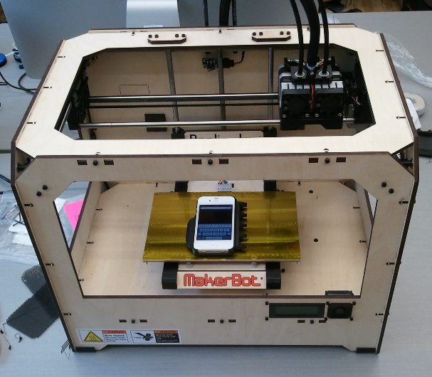

iPhone Adapted Case
The primary goal of the AEGIS project is to build accessibility support into mainstream information and communication technologies (ICT). However, there may be times where an external accommodation may still be required.
Non-slip features are an interesting example. Most phone handsets already include at least some type of non-slip features, such as non-slip materials or shapes that make them easier to hold. In addition, an array of mainstream vendors offer plastic and rubber skins that make phones easier to hold and that protect the phones, if they are dropped. These products have important accessibility benefits, but there do remain some people who require additional non-slip features in order to make effective use of their phones, for example due to hand weakness or spasms.
Proposed Solution
One possibility is to include gripping features on a case that go significantly beyond typical commercial designs. A challenge, however, is that non-slip grips tend to work best when they are customized to each particular end-user. This is complicated by the wide diversity of hand shapes due to factors such as age, hand size, missing digits, left- vs. right- handedness, etc.
Customization could be accomplished by taking impressions from end-users (either by clinicians or by end-user's via mail-in impression kits) as some manufacturers of custom mouth-guards and shoe orthotics already do.
Another possibility is to leverage the newly emerging 3-D printer technologies, in which instead of printing ink on a flat surface, plastic or other materials are used to build-up 3-dimensional shapes. These technologies are entering the mainstream with support from growing open-source design networks that mean that people can extend and mix designs rather than always starting from scratch.
In our easy-grip case example, this means that the user (or someone else) could customize an existing, open-source design for themselves and then print it using a 3D printer. They might then re-share their adapted design with the broader community.
As a proof of concept, we decided to do just this. We located an existing open-source case design (https://tinkercad.com/things/dxGaRb3jal0 by "Pekka") for the iPhone 4 and then we extended it with additional grip features (https://tinkercad.com/things/46ZfrSOturO) and re-shared the results.
Photographs
The 3-D printer (MakerBot Replicator), on which the prototype was printed:

Video
The following video includes some footage (at 0:50) of the case being printed:
Availability
One adapted case design is available on TinkerCad: https://tinkercad.com/things/46ZfrSOturO
For more information, please contact Jan Richards (jrichards@ocadu.ca).
Acknowledgments
Design by Jutta Treviranus, Jan Richards, Jorge Silva and Bert Shire. Thanks also to Jorge Silva for adapting the existing case design and to Bert for printing the case. Thanks to Vanessa Nation at Bell Mobility for loan of an iPhone 4S for testing.
First Posted: 26 June 2012